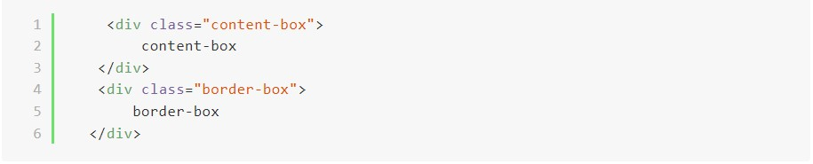

CSS -盒模型 box-model Html 的每個元素都可以視為盒模型，並且對這個盒子去操控。▶ Box Model 的定義 盒模型的組成分為四部分: content (內容) : 圖片 100x 100 位置， HTML標籤包圍的內容。 padding : box model 的內邊距。 border: box model 的邊框，即調整盒模型時，以此和margin作為分界 margin: box model 的外邊距，元素間的間距調整。 ▶ content-box 與 border-box content-box(如下圖): 所設定的數值 ＋ border ＋ padding 如圖片，原本設定寬度為100px ，實際盒模型寬度為 100px + ( padding 10px *2) + ( border 5px *2) = 130px。 border-box: 所設定的數值 ( 已包含 border 和 padding ) 如圖片，原本設定寬度為100px ，實際盒模型寬度為 100px 兩者差異比較 以下為開發程式碼:  如上圖兩者比較: 使用box-sizing: border-box 語法的好處， 即使調整 padding和border的數值，也不會因為元素變大而破版。 參考出處: Box-sizing - 金魚都能懂的CSS必學屬性 關於我 目前是位在餐飲業工作的廚師，為了學習前端領域的技術和知識，所創建的部落格。 封存 2021年10月 2021年9月 2021年8月 2021年7月 2021年6月 2021年5月 2021年4月 2021年3月 2021年2月 2021年1月 追蹤我 gitHub facebook Twttier
Html 的每個元素都可以視為盒模型，並且對這個盒子去操控。
▶ Box Model 的定義
盒模型的組成分為四部分:
▶ content-box 與 border-box
如圖片，原本設定寬度為100px ，實際盒模型寬度為
100px + ( padding 10px *2) + ( border 5px *2) = 130px。
如圖片，原本設定寬度為100px ，實際盒模型寬度為 100px
兩者差異比較
以下為開發程式碼:
使用box-sizing: border-box 語法的好處， 即使調整 padding和border的數值，也不會因為元素變大而破版。
參考出處: Box-sizing - 金魚都能懂的CSS必學屬性